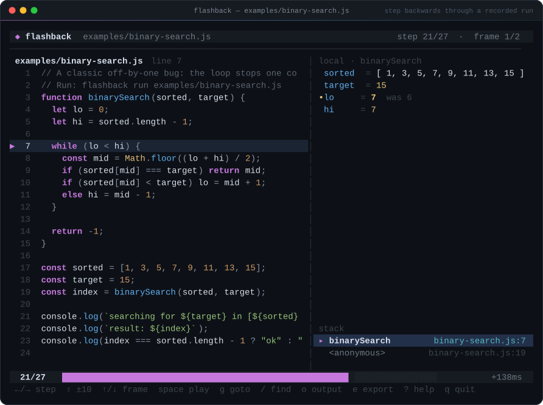

◆ flashback
Record a run.
Step backwards through it.
Time-travel debugging for Node.js. Every line, local, closure variable and call frame is captured, so you can rewind to the moment a value went wrong — then send the whole trace as one HTML file.
